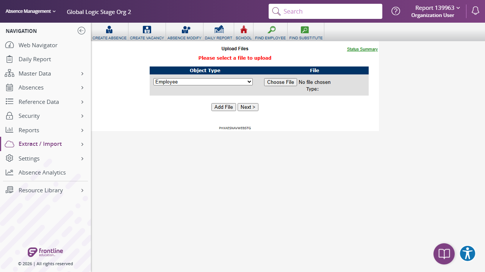

Execution 4 · Angular Daily Report to Import Data
tests/navigation/angular-daily-report-to-extract_import-to-import-data.md · Video 5:08–6:30
4
Execution
5:08–6:30
Continuous-video range
Unattended safe mode
Execution mode
Scenario outcome
Daily Report to Import Data navigation passed; Status Summary, 12 object types, and missing-file validation were verified. File Type controls were not rendered until a file is chosen, so that safe case was not tested.
Continuous video evidence
Screenshot evidence
{kind=link}

Complete test structure
Source: tests/navigation/angular-daily-report-to-extract_import-to-import-data.md
# Daily Report to Import Data Page Under Extract/Import Validation — AES Stage
## Execution directive
Before any browser action, read completely:
1. `instructions/project-instructions.md`
2. `instructions/application-details.md`
3. `instructions/test-data.md`
Execute this scenario directly in Chrome using Playwright MCP. Do not generate Playwright or TypeScript code. Run unattended without pausing for password entry or routine confirmation. Save both Markdown and standalone HTML execution reports under `reports/`.
## Objective
Log in to AES Stage, navigate to Daily Report and then navigate to Extract/Import -> Import Data Page, and validate the available positive, negative, and edge-case behavior without creating any record.
## Preconditions and safety
- Playwright MCP is available.
- Work only on AES Stage at `https://aesstage.flqa.net`; the authentication redirect to `https://idgatewayawsstage.flqa.net` is approved.
- For this scenario, the environment-variable rules above replace the manual-password-entry instruction in `instructions/test-data.md`.
- Do not record, display, repeat, or screenshot the password.
- If validation requires a save attempt, use incomplete or intentionally invalid data so creation cannot succeed.
- During authentication, `idgatewayawsstage.flqa.net` is an approved login host. After authentication, continue only in the AES Stage application.
- For this scenario, the approved authentication redirect above is the explicit exception to the general different-host stop rule in the shared instructions.
## Steps
### 1. Launch and authenticate
1. Read the Stage URL and username from `config/aes-stage.json`.
2. Use `AES_STAGE_PASSWORD` when the environment variable is configured.
3. Otherwise, read `password` from `.secrets/aes-stage.credentials.json`.
4. If neither password source is available or the local value is still a placeholder, mark all flows **BLOCKED**, generate the HTML report, and stop before opening the browser.
### 2. Navigate to Add Employee
5. Navigate through `Daily Report`.
- Expected: The Daily Report page is displayed.
6. Navigate to `Extract / Import` → `Import Data`
- Expected: The page shows Object Type and File for upload operations.
7. Click on `Status Summary` link in the page
- Expected: Page should navigate to `Import Status` page.
### 3. Positive validation
8. Identify all visible fields, required indicators, field types, dropdown options, date controls, and action buttons.
- Expected: The form structure is observable and enabled as appropriate.
9. Do not submit the completed valid form. Clear or reset the form before negative testing.
- Expected: No employee record is created.
### 4. Negative validation
10. Attempt validation by clicking `Next` button.
- Expected: `Please select a file to upload` validation is displayed.
11. Test any field randomly and verify the status
- Expected: Each field should show appropriate message
### 5. Edge-case validation
12. Test the first and last available `Object Type` options without selecting a file.
- Select the first option, `Employee`, and then the last visible option, `Reference Data - Skill`, one at a time.
- Select `Next` after each choice while the File control remains empty.
- Expected: Both boundary options remain selectable, the page stays responsive, and `Please select a file to upload` is displayed without starting an import.
13. Test each available `File Type` option without selecting a file.
- Exercise the blank/default option and each visible non-empty option such as `Excel`, `CSV`, and `Delimited`, one at a time.
- Select `Next` after each choice while the File control remains empty.
- Expected: Every visible File Type option is selectable, missing-file validation remains consistent, and no import is created.
14. Select `Next` twice consecutively with no file selected.
- Expected: Validation remains stable, the page does not navigate, duplicate error messages do not accumulate, and no import is started.
15. Verify keyboard focus across `Object Type`, `Choose File`, `File Type`, `Add File`, `Next`, and `Status Summary` where those controls participate in the tab order.
- Expected: Focus advances in a logical order, each focused control remains operable, and no file dialog or submission is triggered during focus-only testing.
### 6. Final verification and cleanup
16. Confirm the browser is on the AES Stage application after the approved authentication redirect and the Daily Report is responsive.
- Expected: No unapproved redirect, unhandled error, or broken layout is present.
17. Clear/reset all entered test values or navigate away without saving.
- Expected: No record is created and no cleanup record is required.
## Result classification
- Mark **PASS** only if navigation succeeds and every executed validation behaves as expected.
- Mark **FAIL** for application errors, missing required validation, accepted invalid values that can be safely demonstrated, or unstable UI behavior.
- Mark **BLOCKED** for authentication, permission, environment, unavailable-control, or safety restrictions.
- Mark an individual case **NOT TESTED** when the visible form lacks the relevant control or safely triggering validation is impossible.
## Reporting
Create `reports/navigation/angular-daily-report-to-extract_import-to-import-data/angular-daily-report-to-extract_import-to-import-data-<YYYYMMDD-HHMMSS>.html` as a polished standalone report containing scenario totals, detailed results, interaction evidence, accepted zero-result behavior, failures with reproduction steps, route observations, and safety/cleanup status. Create the report directory when it does not exist.
At the top of the report, show separate summary cards for:
- Total flows
- Flows passed
- Flows failed
- Flows blocked
- Detailed checks passed/failed, shown separately from flow totals
Include a visually distinct **Scenario outcomes** section containing one card for each of the four flows. Every card must contain:
1. Flow number and complete flow name
2. A short actual-result summary stating whether the navigation and interaction checks worked
3. A prominent final status: **PASS**, **FAIL**, or **BLOCKED**
Example:
> **1 · Angular Daily Report → Extract / Import → Import**
>
> Angular Daily Report to Extract / Import controls were interactive; navigation completed.
>
> **PASS**
Determine each flow independently. Mark a flow **PASS** only when all required steps and shared checks used by that flow pass. Mark it **FAIL** when any required step fails, and **BLOCKED** when it cannot be completed safely. The overall report status is **PASS** only when every flow passes. Never include credentials or authentication secrets.Safety and cleanup
No password, token, cookie, or authentication fragment is included. Unattended safe mode did not create, update, or delete persistent staging records.